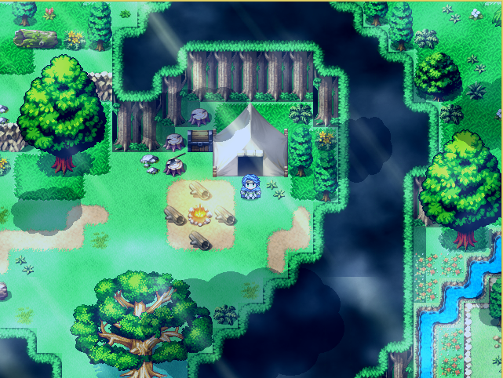
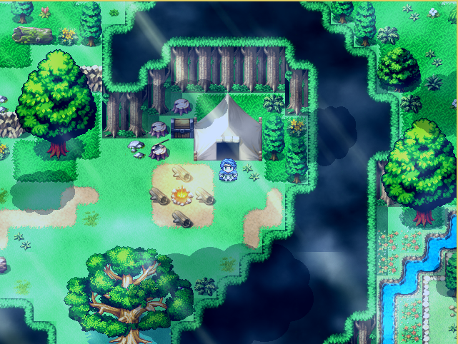
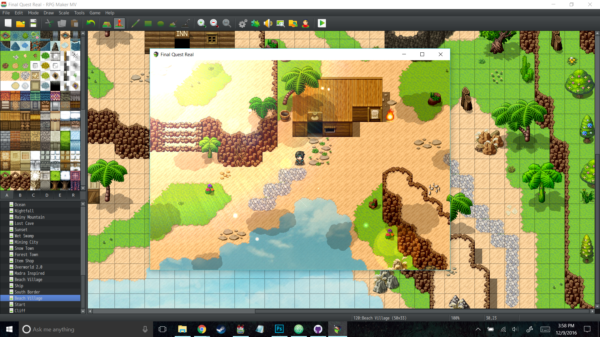

made with RPG Maker VX Ace.
Aur Saga is a single player RPG set in a beautiful world. A game i made for the Indie Game Maker Contest in 2015. Most of my time was focused on creating a serene setting that was both a tranquil yet inviting setting. A heavy emphasis on exploration and piecing together the world and strategy to defeating the creatures that inhabit this mysterious world.
 



Download Link
made with RPG Maker MV.
My current project, a JPRG heavily inspired by games like FF9 and Golden Sun. Set in a traditional fantasy setting, a lone woman hopes to learn the truth of her father's disappearance. With the aid of two hunters and a wandering knight, our heroes travel the world hunting monsters and uncovering the truth of their world.

Download Link
made with Twine.
A short and personal tale of someone undergoing depression. Inspired by a true story of hardship and despair, this story chronicles the real life struggle of what it means to question life itself.


Download Link
All content and trademarks property of their respective owners